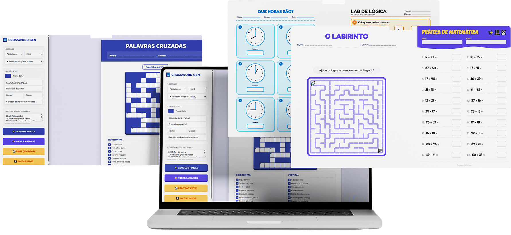

Você passa mais tempo no Google e no Canva do que com seus pacientes.
Se você atende 10 crianças por semana, são até 20 horas perdidas montando atividade uma a uma. Gere tudo em poucos cliques — e volte a ser psicoeducador.
1 ano de acesso • Acesso Imediato

Você se formou para transformar a vida de crianças...
não para passar horas montando atividade no Canva.
Pensa na sua segunda-feira. A criança das 8h está em fase de alfabetização. A das 9h precisa de estímulo em raciocínio lógico. A das 10h ainda trabalha coordenação motora fina. Cada uma exige uma atividade diferente — e todas precisam estar prontas antes de você começar a atender.
Aí começa o ciclo: você abre o Google, vai para o Pinterest, encontra algo mais ou menos adequado, percebe que não serve direito, abre o Canva ou o Word, adapta, formata, imprime. Quando você olha para o relógio, já foi uma hora. E amanhã começa tudo de novo.
Com o tempo, as noites viram extensão do consultório. Os fins de semana também. O tempo que deveria ser de estudo, descanso ou família vai embora em planilhas e arquivos PDF. E o pior: mesmo com todo esse esforço, às vezes a atividade não fica tão boa quanto você gostaria.
Aí vem a sensação mais pesada: a de que está sempre devendo. Devendo material melhor para as crianças. Devendo atenção para a família. Devendo tempo para si mesmo. Você corre, mas nunca sente que está à frente.
Você se identifica?
- Já montou atividade às 23h de um domingo
- Já imprimiu algo do Google que não ficou bom e usou mesmo assim
- Já sentiu que gasta mais tempo preparando do que atendendo
- Já pensou que deveria existir um jeito mais rápido de fazer isso
E se o problema não for falta de dedicação sua...
mas falta da ferramenta certa?
Conheça o AtivaMente: 25 geradores de atividades prontas para personalizar e imprimir em segundos.
Chega de improvisar material. Agora você escolhe, personaliza e imprime. Sem Canva, sem Pinterest, sem perder seu tempo.


O AtivaMente é um kit com 25 geradores de atividades pensados para quem trabalha com desenvolvimento infantil no dia a dia. Cada gerador cria atividades diferentes a cada clique — você nunca repete o mesmo material. É como ter um banco infinito de atividades que se renovam sozinhas.
Um kit. Praticamente tudo que você precisa.
Labirintos, sequências, códigos secretos, missão código
Palavras cruzadas, caça-palavras, organização de frases, associação palavra-imagem
Adição com apoio visual, contagem, mercadinho, coordenadas, comparação de medidas
Traçado de linhas, traçado de formas, recorte e preparação para escrita
Simetria em pixel, sombras, qual é o diferente, eu vejo
Leitura de relógio, mapa de coordenadas, grandezas
Para quem é o AtivaMente?
- Psicoeducadores que atendem crianças em consultório e precisam de material variado toda semana
- Psicopedagogos que trabalham com dificuldades de aprendizagem
- Professores de reforço escolar e educação especial
- Pais que fazem atividades em casa para apoiar o desenvolvimento dos filhos
- Profissionais que atendem múltiplas crianças por dia e não podem gastar horas preparando material
Como funciona na prática
Navegue pelos 25 geradores e selecione o que faz sentido para a sessão do dia.
Coloque o nome da criança, ajuste o nível de dificuldade ou o tema.
Um clique e o material está pronto para sair da impressora. Sem edição, sem formatação.
Entregue a atividade com confiança, sabendo exatamente quais habilidades está estimulando.
"Do momento que você abre o AtivaMente até a atividade impressa na sua mão: menos de 2 minutos. O tempo que você levava para encontrar um PDF ruim no Google."
O que quem já usa está dizendo
Profissionais reais. Rotinas que mudaram de verdade.

Maiara Dalcin
Psicóloga e Neuropsicóloga
Com formação em Psicologia Clínica e especialização em Neuropsicologia e Análise do Comportamento Aplicada, Maiara tem se dedicado a transformar a forma como pais, cuidadores e profissionais lidam com os desafios do desenvolvimento infantil.
Além do atendimento clínico, é palestrante e criadora de conteúdos voltados para a educação emocional e comportamental das crianças — sempre com uma linguagem acessível e afetuosa.
Tudo que você precisa para nunca mais
improvisar material de sessão
(10 crianças/semana × 1h de prep)
atividade impressa
sem repetição
De R$ 497
Por apenas
1 ano de acesso completo • Acesso imediato após o pagamento
Menos de R$ 0,19 por dia para nunca mais montar atividade do zero.
QUERO MEU ATIVAMENTE AGORA🔒 Pagamento 100% seguro
Perguntas que você pode estar tendo agora
Não. O AtivaMente foi criado exatamente para eliminar essa etapa. Você acessa pelo navegador, escolhe o gerador, preenche os campos (nome da criança, nível) e clica em gerar. Sem instalação, sem design, sem curva de aprendizado.
Cada gerador cria combinações diferentes a cada clique — palavras, números, caminhos, figuras e temas variam automaticamente. Na prática, você pode usar o mesmo gerador toda semana durante anos sem repetir a mesma atividade.
Sim. Os geradores permitem ajustar o nível de dificuldade, então a mesma atividade pode ser usada com uma criança em fase inicial e com outra mais avançada. O material se adapta ao perfil de quem você está atendendo.
O AtivaMente funciona em computador, notebook e tablet — qualquer dispositivo com navegador e acesso à internet. Para imprimir, recomendamos usar em computador ou notebook conectado à impressora.
Cada atividade foi desenvolvida pela psicóloga e neuropsicóloga Maiara Dalcin com base em fundamentos da neuropsicologia e análise do comportamento aplicada. Cada gerador já vem com as habilidades estimuladas mapeadas, o que facilita até a elaboração de relatórios.
Após 12 meses, o acesso é encerrado. Você pode renovar para continuar usando. Todo o material que você gerou e imprimiu durante o período continua sendo seu normalmente.
Assim que o pagamento é confirmado, você recebe os dados de acesso por e-mail. O processo é automático — em poucos minutos você já pode gerar sua primeira atividade.
Entendemos a desconfiança — mas o valor baixo é uma decisão intencional. Queremos que o maior número de profissionais tenha acesso a uma ferramenta que realmente funciona. Você leva 25 geradores com embasamento técnico, atividades infinitas e 1 ano de uso por menos de R$ 0,19 por dia. O retorno começa na primeira sessão.